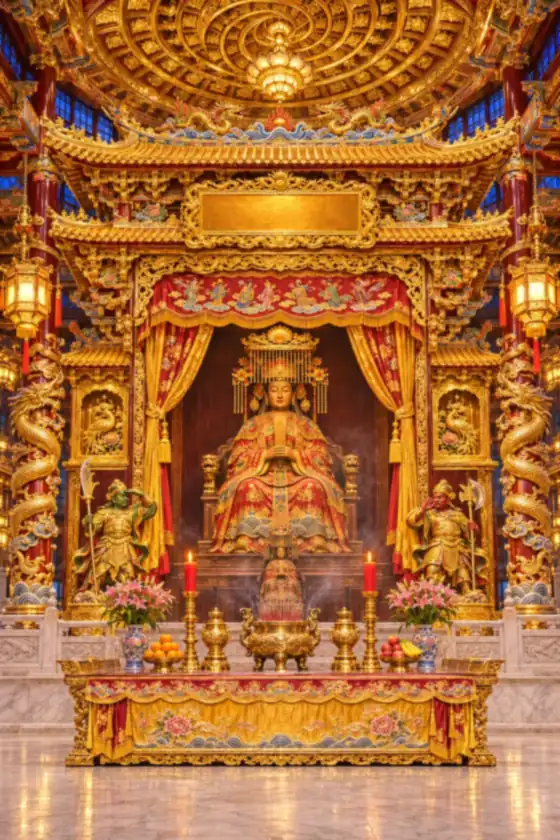
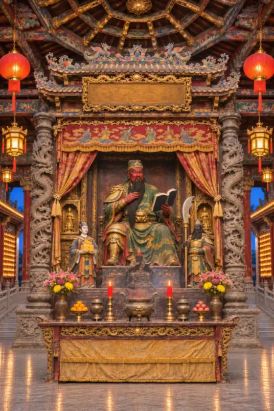
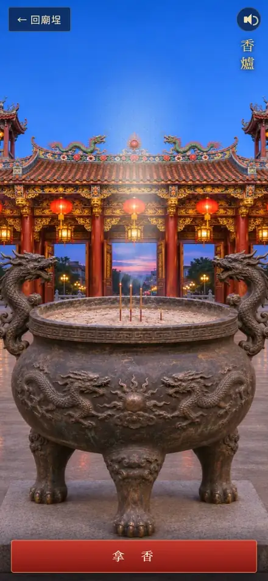
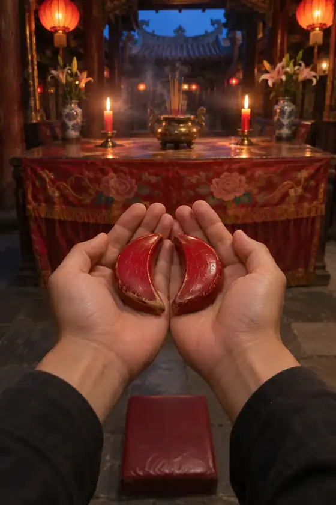
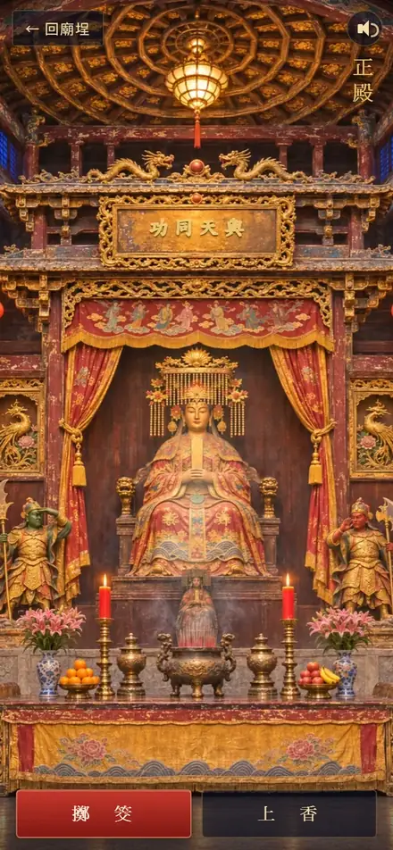
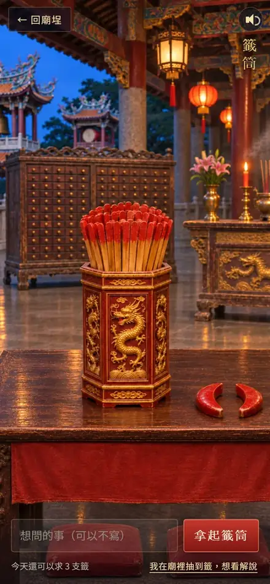
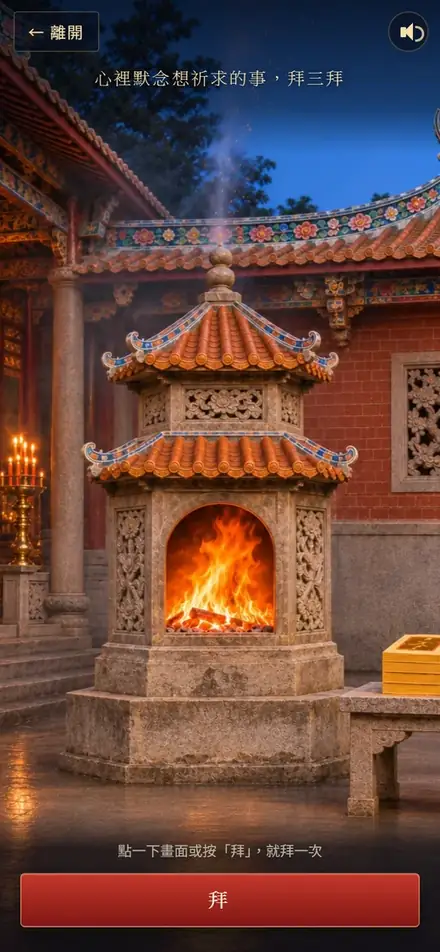
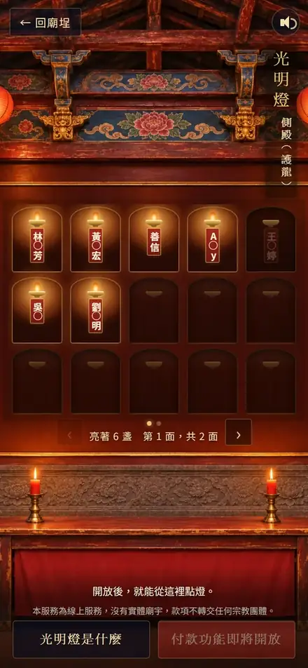
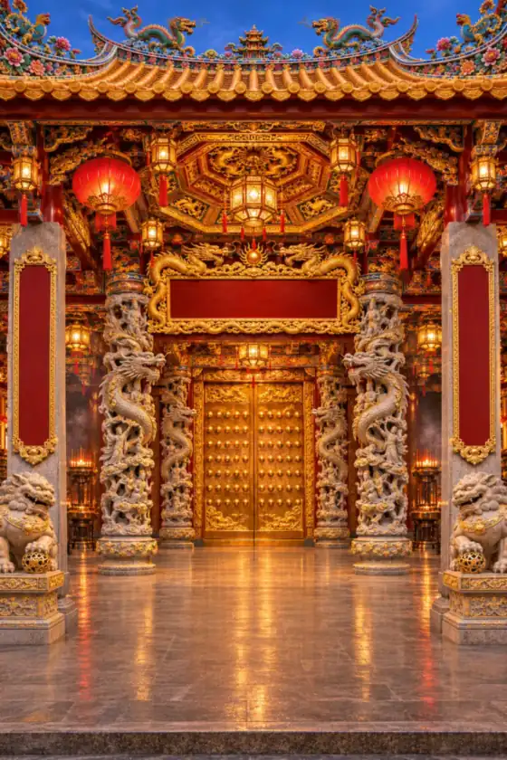
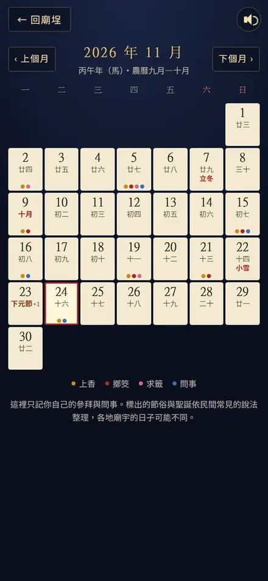

功能介紹
一炷香、一對筊、一支籤
線上拜拜不用下載，在 LINE 裡點開就是廟埕：上香、擲筊、求六十甲子籤、燒金紙，一步一步親手做。有想問的，回到聊天室跟 AI 廟公說。


主神
三十尊主神，選一位供奉
媽祖、觀世音菩薩、關聖帝君、土地公、文昌帝君、月下老人……第一次進廟先選一位；之後走進哪一間廟，就向那間廟的主神請示。每一尊主神都有一間人人可拜的公廟，正殿的樣子各不相同。
廟名一律不使用真實宮廟的名稱。

上香
走到香爐前，持香三拜
走到香爐前，持香三拜，把香插進爐裡。每天來一次，廟裡的香火就多一分。
每人每天上香一次算 20 點，讓廟一點一點長大。


擲筊
連續三個聖筊，才算應允
在正殿把想問的事放在心裡，擲出一對筊。連續三個聖筊，才算應允。
每一次擲筊，都是你當下親手擲出來的，沒有人能事先安排，也不會因為有沒有付費、付多少而不同。

求籤與解籤
求一支六十甲子籤，再請廟公解說
搖一搖籤筒，取出一支六十甲子籤，再擲筊確認是不是這一支。
求到的籤，回到聊天室請廟公講解。籤詩的白話解說由 AI 產生，僅供參考。
跟廟公說說話
心裡的事，回到聊天室慢慢說
回到聊天室直接打字。廟公陪你把事情想清楚，也替你講解求到的籤。
廟公由 AI 扮演。他記得你最近幾天說過的事和求過的籤，隔幾天再來可以接著聊；隔太久的事可能要再跟他說一次。他不代神明發言，也不替任何結果打包票。醫療、投資、法律與人身安全的事，還是要找合格的專業人士。
問廟公每天有 3 次免費（以 LINE 內顯示為準）；也可以加購問事次數。

燒金紙
在金爐前，把金紙一張一張送進去
捧著金紙在金爐前拜三拜，再把金紙一張一張送進爐裡，看著火光把它化去。
每天可以免費燒一次，也可以另外選購金紙。

光明燈
為掛念的人，點一盞燈
在側殿的燈牆為一個名字點一盞燈，亮一年。燈牆不用錢就能進去看；點燈屬於付費項目。
價金由你自己決定，最低 100 元；不管付多少，燈亮的時間、燈位和燈的樣子都一樣。
燈上的名字若是別人的，請先取得對方同意；燈牆上對其他人只顯示遮蔽後的名字。


參拜曆
每一次參拜，都替你記著
參拜曆只記你自己的上香、擲筊、求籤與問事，一個月翻開來就看得到。
曆上也標出歲時節俗與神明聖誕，依民間常見的說法整理，各地廟宇的日子可能不同。
蓋廟
蓋一間自己的廟，從小祠蓋到金闕天宮
第一次蓋廟費滿 100 元，就能建造一間屬於你的廟，幫它取名字、在龍柱留名。之後每一筆蓋廟費、每一次上香，都讓它長大一點。公廟最高到第五級，再往上只有自己的廟才有。
廟越大，開的殿越多：同祀的神明、廟裡的浮雕與彩繪作品，會隨著等級一一安座。
第一級
小祠
建廟即有
第二級
單殿
累計 300 點
第三級
三川殿
累計 1,500 點
第四級
重簷大殿
累計 5,000 點
第五級
鐘鼓樓大廟
累計 10,000 點
第六級
三進大廟
累計 30,000 點
第七級
金闕天宮
累計 100,000 點
蓋廟費 1 元算 1 點；每人每天上香一次算 20 點。點數只用來決定廟的樣子，不能兌換或轉讓。